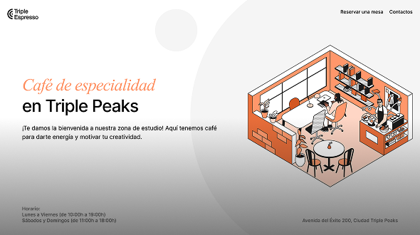

Cafetería de la Biblioteca
Página web responsiva de una cafetería, desarrollada desde cero utilizando HTML5 y CSS3 a partir de un Brief de diseño. Para su maquetación se implementaron la metodología BEM, Flexbox y CSS Grid, asegurando un código limpio, modular, mantenible y escalable. El proyecto incluye un menú de navegación intuitivo y un formulario de contacto funcional, y se encuentra publicado para su visualización en GitHub Pages.